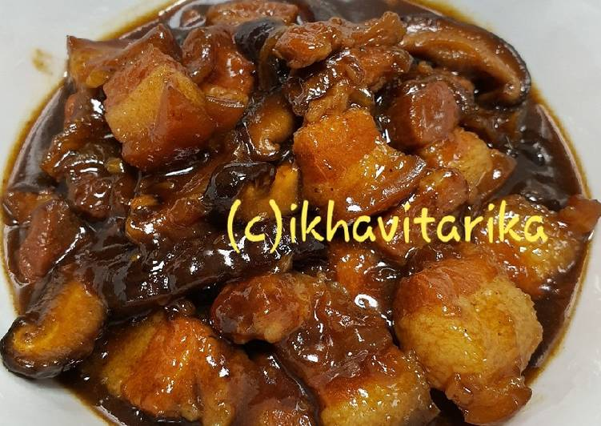

Babi Kecap

Foto: cookped @Ikha Vitarika
Bahan - Bahan:
1/4 kg daging babi samcan (pork belly), potong2
6-8 buah jamur shitake
3 siung bawang putih, cincang kasar
1 butir bawang bombay uk.kecil, iris memanjang
1 sdm gula merah, sisir
6 sdm kecap manis
1 sdm saus tiram
1/2 sdt bumbu ngohiong (five spices)
500 ml air
Secukupnya Garam, gula pasir dan merica
Cara Membuat